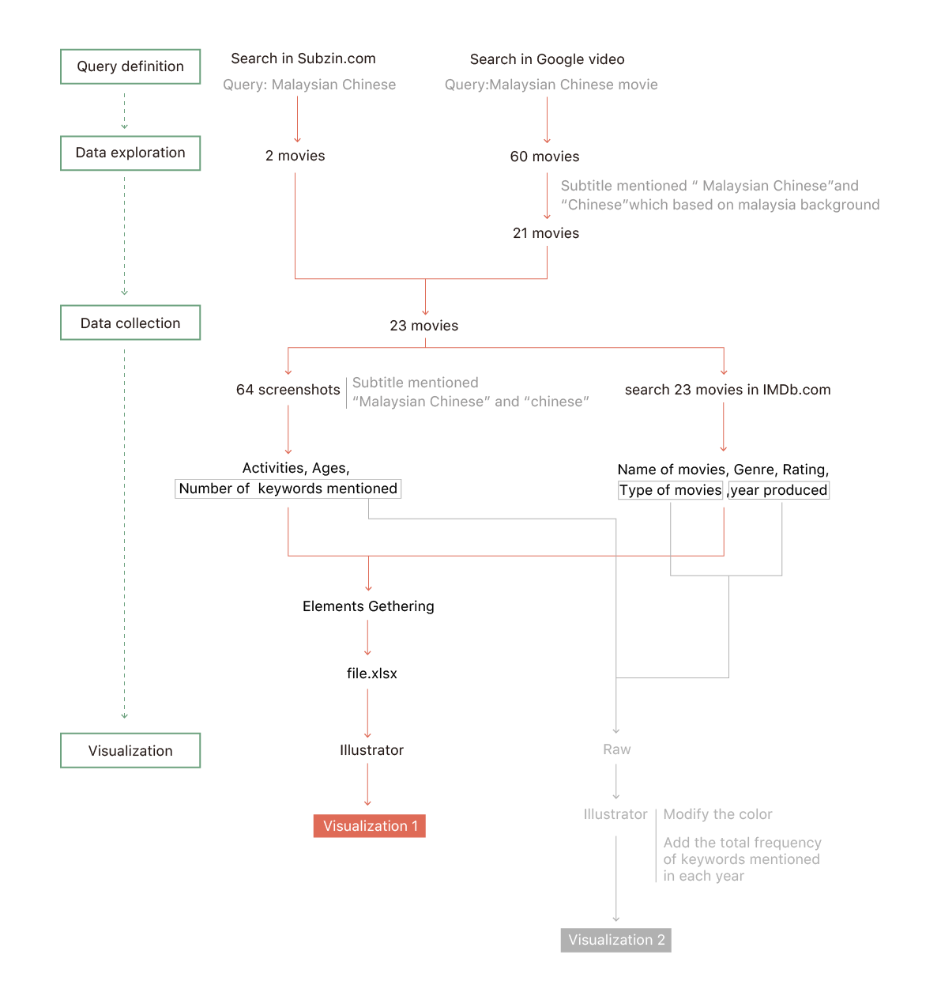

Description
Except to chose the academic field to look deeper into, the other field that we chose is pop culture which we can have a better understanding on how “Malaysian Chinese” being presented in the public’s eyes.
Movies are part of the daily television viewers’ consumption by now, and a field that has been lately revealed to be unconventional and rich in creativity. This section explores the partitions of film production and the how many times the keyword appears in movies to analyze the relation between Malaysian Chinese, country, year, and to visualize information.
Firstly we wanted to know the scenes in details such as movie types, event scenes, and the age of actors when “Malaysian Chinese” is mentioned. We found that in the activities of working and daily chatting, the “Malaysian Chinese” is mentioned more. Besides, mature adult and ageing adult talk more about it.
Protocol

The first source of the information is mainly from the website Subzin, in which it’s possible to find out all those films, whose subtitles contain the researched query. It’s achievable to obtain a complete list of the movies which contained all kinds of types of movies.
We started with the query of “Malaysia Chinese”, but few movies mentioned these two words, so we search Malaysian Chinese movies in Google video and gained 60(21 results are related) movies. (23 results in total) After we took the 64 screenshots with “Malaysian Chinese” in the subtitle in these 23 movies, we gathered the information on IMDb.com such as -the name of movies -the genre -year produced -the rating -the type of movies We also manually tagged in the 64 screenshots with: -the activities -the age -the number of keywords mentioned
Then we made the visualization in Illustrator.